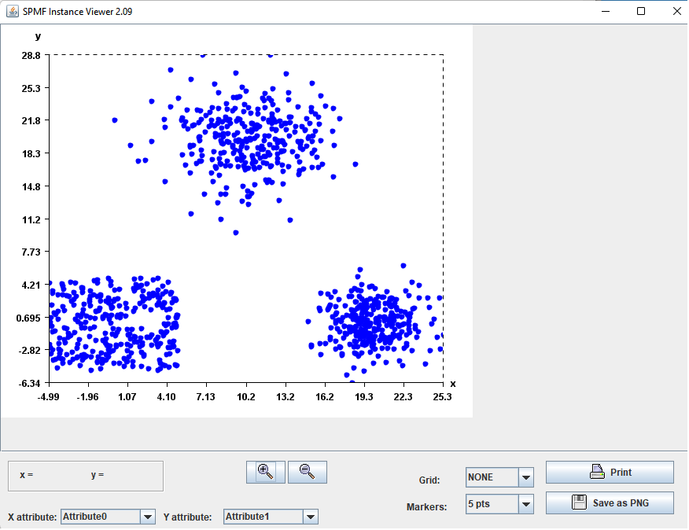

Generating a Synthetic Clustering Dataset (SPMF documentation)
This example explains how to generate a synthetic transaction database using the SPMF open-source data mining library.
How to run this example?
- If you are using the graphical interface,
- (1) choose the "Generate_a_clustering_dataset" algorithm,
- (2) set the output file name (e.g. "output.txt")
- (3) set the algorithm parameters as follows:
- Point per cluster = 300
- Attribute count = 2
- Visualize generated data = true
- Distribution cluster 1 = Normal(10,3) Normal(20,3)
- Distribution cluster 2 = Uniform(-5,5) Uniform(-5,5)
- Distribution cluster 3 = Normal(20,2) Normal(0,2)
- (4) click "Run algorithm".
- If you are using the source code version of SPMF, launch the file "MainTestGenerateClusteringData.java" in the package ca.pfv.SPMF.tests.
What is this tool?
This tool is a random generator for creating a synthetic dataset to be used for testing clustering algorithms.The generator allows to generate a dataset that contains a given number of clusters that follow some distributions such as the Normal or Uniform distribution, and that have a selected number of attributes, and number of instances per cluster. If running this tool from the graphical interface of SPMF, the number of clusters must be from 1 to 5. But if using the source code version of SPMF, the number of clusters is not restricted.
Synthetic databases are often used in the data mining litterature to evaluate algorithms. In particular, they are useful for comparing the scalability of algorithms, or for evaluating algorithm with respect to some ground-truth.
What is the input?
The tool for generating a clustering dataset takes these prameters as input:
1) the number of points (instances) per cluster (positive integer). In this example, it is set to 300 because so that each cluster will have 300 points. In the graphical interface of SPMF, all clusters must have the same number of points. In the source code version of SPMF, it is possible to also generate clusters with different number of points.
2) the number of attributes (positive integer). For instance, in this example, it is set to 2. This means that each instance (point) in the generated database will be a vector of 2 values (it will be in 2 dimension).
3) Visualize generated data (boolean). If set to true, the generated data will be displayed using the Instance Viewer Tool of SPMF after the data has been generated. Otherwise, the data will not be displayed and will be only saved to the output file.
4) The distributions to be used for generating the attributes of each cluster. For instance, in this example, we have three clusters and two dimensions. For the first cluster, we set Normal(10,3) Normal(20,3), which means that points in the first cluster will be generated with two attributes. The first attribute will follow a normal distribution with a mean of 10 and a standard deviation of 3, while the second attribute will follow a normal distribution with a mean of 20 and a standard deviation of 3. The second cluster has also two attributes. The first one follows a uniform distribution with a minimum value of -5 and a maximum value of 5. The second one also follows a uniform distribution with a minimum value of -5 and a maximum value of 5. The distributions of the third cluster can be explained in the same way. Note that all clusters should have the same number of dimensions, which is 2 in this example.
What is the output?
The algorithm outputs a database of instances respecting the parameters provided. It is a text file. A random number generator is used to generate the database, and thus if the tool is run several times, the output will be different.
The format of the output file is as follows.
Each line is an instance (point), described as a list of double values separated by single spaces. These values are the values for the attributes (dimensions). For example, here is a few lines from a file generated for this example:
8.223056957474475 18.305806094148416
18.53173409031428 17.12800320556778
11.78815889838998 15.172209880225482
14.465913286699111 18.73693056669763
12.132693927624041 20.89521556764735
8.034607447696011 24.794130080242603
6.79806783859077 28.83137892160805
9.11577562802012 18.94254052873174
10.092137470883381 17.236132146276898
11.063982605866594 18.171935123957358
9.523453050588738 19.51941579740386
...... ....
The first line is an instance point with the value 8.223056957474475 for the first attribute (dimension) and the value 18.305806094148416 for the second attribute. The other lines follow the same format.
Visualizing the output
If the parameter Visualize generated data is set to true, when running this tool, the generated dataset will be displayed visually using the Instance Viewer Tool of SPMF:

Applying clustering algorithms on the generated dataset
Then, after the dataset is generated, we can apply some clustering algorithms on it such as K-Means, DB-Scan and others, which are offered in SPMF. You may see the documentation of each specific clustering algorithm to see how to use them.